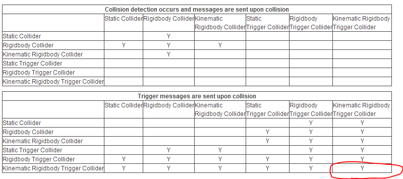
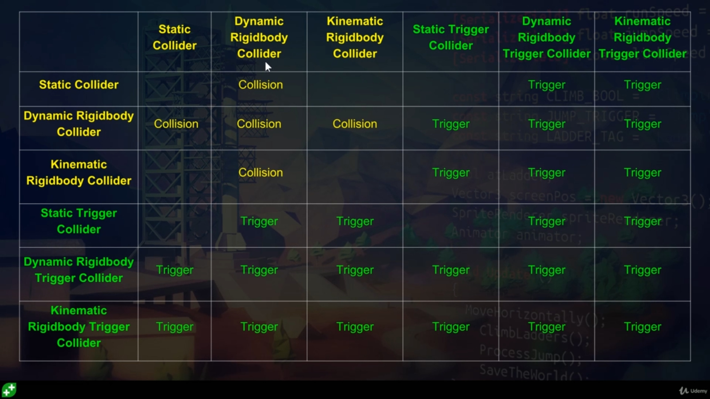
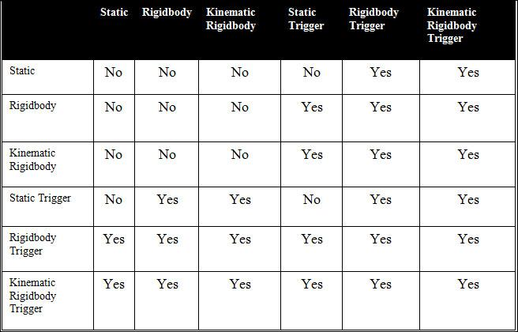
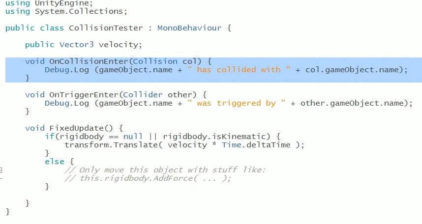

Lecture 09 - Collisions, Triggers and Physics in Practice
Lecture Overview
5MMCS007W/5CCGD013W Lecture 09: Unity physics, collision and triggering – the follow-on from Lecture 08: Input and Scripted Movement.
By the end of this lecture, you should be able to:
- Choose the right dynamics configuration (static, kinematic, dynamic) including Use Gravity and Is Kinematic combinations.
- Predict, from the collision matrix, whether a pair of colliders sends collision messages, trigger messages, or neither.
- Respond to
OnCollision/OnTriggermessages in script, and enable kinematic contacts with Contact Pairs Mode. - Apply these rules to character controllers, moving platforms and XR grabbable objects.
Lecture 08 covered how to make objects move; this lecture is about how they interact.
Interactive Examples
https://www.blend4web.com/apps/dairy_plant/dairy_plant.html?v=93906d9bd04fe610df690c519724295f
Video: Immerse Framework for Unity3D
GameObject Dynamics Options - Static, Kinematic and Dynamic
GameObject Dynamics Options
Video: Unity Physics: Static, Kinematic, Dynamic
Static, Kinematic RigidBody and Dynamic RigidBody
Static
No movement, no effects (collider only, or Static ticked). Used for level geometry; optimised because it is never simulated.
Kinematic Rigidbody (Rigidbody, Is Kinematic on)
Can be moved by script or animation, but no forces affect it. It can affect dynamic Rigidbody GameObjects. Move it with Transform methods (Translate, Rotate) or, best practice, Rigidbody.MovePosition from FixedUpdate (Lecture 08, slide 6).
Dynamic Rigidbody (Rigidbody, Is Kinematic off)
All forces affect it and other GameObjects. Move it with Unity physics (AddForce).
Gravity
Can be on or off for any Rigidbody – see the combinations in the next section.
Rigidbody settings: Use Gravity and Is Kinematic
How a Rigidbody with a collider behaves for collisions (OnCollisionEnter(Collision col)) with each combination:
| Use Gravity | Is Kinematic | Result |
|---|---|---|
| On | Off | Will fall; reacts to forces and collisions. |
| Off | Off | Acts as static, but forces and collisions still affect it. |
| On | On | Is Kinematic cancels out gravity; may be moved by script or animation, but is not affected by forces. |
| Off | On | Acts as static, but is a real collision for dynamic Rigidbodies that hit it. |
Compared with a kinematic Rigidbody, a static collider (no Rigidbody) is not calculated for – it is optimised for geometry that never moves.
Colliders and the collision matrix
Collider interactions
Colliders interact with each other differently depending on how their Rigidbody components have been configured. The three configurations are described in full in Lecture 08 (Controller types) and in slide 2 of this lecture:
- Static collider (no Rigidbody): level geometry that never moves; incoming Rigidbodies collide with it but don’t move it.
- Dynamic Rigidbody collider: fully simulated by physics; the most common configuration (Tutorial 02–03 control objects).
- Kinematic Rigidbody collider: moved by script or animation; pushes dynamic bodies but isn’t pushed itself.
Kinematic Rigidbody moved by Transform: the sliding door
Collider + kinematic Rigidbody, moved with Transform methods (.Translate, .Rotate, .MoveTowards, .LookAt)
Not best practice, but it works – like Tutorial 02–03. For physically correct contacts, move it with MovePosition/MoveRotation from FixedUpdate (Lecture 08, slide 6).
This is a GameObject with a collider and a Rigidbody with Is Kinematic enabled. You can move it from a script by modifying its Transform, but it will not respond to collisions and forces like a non-kinematic Rigidbody.
Kinematic Rigidbodies should be used for colliders that can be moved or disabled/enabled occasionally but that should otherwise behave like static colliders. The best example is a sliding door: it normally acts as an immovable physical obstacle, but can be opened when necessary.
Unlike a static collider, a moving kinematic Rigidbody will apply friction to other objects and will “wake up” other Rigidbodies when they make contact.
Collision matrix: static, kinematic, Rigidbody and trigger colliders
Use these tables to check whether a pair of colliders sends collision messages, trigger messages, or neither.



Collision and trigger messages
Collision and trigger messages
When collisions occur, the physics engine calls functions with specific names on any scripts attached to the objects involved. You implement your code logic in these functions to respond to the collision event.
- On the first physics update where the collision is detected,
OnCollisionEnter()is called. - During updates where contact is maintained,
OnCollisionStay()is called. - Finally,
OnCollisionExit()is called, indicating that contact has been broken. - Trigger colliders call the analogous
OnTriggerEnter(),OnTriggerStay()andOnTriggerExit()functions.
Video: Detecting Collisions on Kinematic Rigidbodies
Unity Scripting API references
Collision or trigger? What each needs
Collision detection: OnCollisionEnter(Collision col)
True collision detection – solid objects that stop each other – as opposed to triggering.
- Both objects need colliders with Is Trigger off – this makes them solid.
- At least one object needs a Rigidbody:
- a true (dynamic) Rigidbody should only move by forces – the ideal situation;
- an Is Kinematic Rigidbody, or an object with no Rigidbody, can use movement scripting.
Trigger detection: OnTriggerEnter(Collider other)
A trigger does not “collide”: it detects intersection (overlap), and objects pass through each other.
- At least one of the colliders has Is Trigger on.
- At least one object needs a Rigidbody (a kinematic Rigidbody is fine).
- The collider shape can be edited to taste – it defines the detection volume.
Notes and pitfalls
- Kinematic Rigidbody colliders touching other kinematic Rigidbody colliders do not need Is Trigger on to be detected (see Contact Pairs Mode below).
- Moving a static collider (no Rigidbody) gives unwanted results – add a kinematic Rigidbody if it must move.
Shortcut
- Triggers: kinematic Rigidbody trigger colliders, moved by Transform (movement scripting).
- Collisions: a true (dynamic) Rigidbody, moved with AddForce.
Kinematic collisions: Contact Pairs Mode
By default, kinematic Rigidbodies send no collision messages when they touch static colliders or other kinematic Rigidbodies. If you need your moving kinematic colliders to report physically correct contacts:
- Set Project Settings > Physics > Contact Pairs Mode to Enable All Contact Pairs (or Enable Kinematic Kinematic Pairs / Enable Kinematic Static Pairs).
- Move your kinematic bodies using
Rigidbody.MovePositionandRigidbody.MoveRotationfrom FixedUpdate. - Collision events (OnCollisionEnter, etc.) will then happen as they do for standard Rigidbodies – see the video in Section 4.1.
- Use FixedUpdate to get correct physics collisions, whether or not it moves the object.
- Use
Rigidbody.AddForce, orRigidbody.MovePositionandRigidbody.MoveRotation, within FixedUpdate – rather than Transform movement as in Tutorial 02–03.
Unity Manual: Physics settings (Contact Pairs Mode)
Rigidbody.MoveRotation scripting reference
Unity Discussions: Object doesn’t collide with wall using Transform.Translate
Unity Collisions and Triggers test project and demo
Videos: collisions, triggers, Rigidbodies and kinematics
Video: Unity 3d: Collisions, Triggers, Rigidbodies, and Kinematics
Video: Unity Explained - Colliders - Beginner Tutorial
Unity Collisions and Triggers Test Project (Blackboard)

Demo
- Make a Cube and a Sphere – both have colliders. Play: nothing happens; you can move them, but this is bad (unoptimised) – they are essentially static, even if Static is not ticked.
- Add a Rigidbody to the ball: real and physical – gravity and collision with the cube via the physics engine. You may just need a trigger.
- Add a script to both – 90% of the time you just need triggers.
- A collision or trigger notifies both objects.
- Collision: when a true Rigidbody hits a collider (not a trigger).
- Try the box with and without Is Trigger, and look at the Console.
- Make the box non-static: add a Rigidbody. It has gravity and will fall; turn off gravity, then the collision moves it.
- Make the box Is Kinematic: the box is not moved. Is Kinematic (may be moved – no physics) vs static (will never move – optimised).
- Make the sphere Is Kinematic too: no movement, but when dragged they do not affect each other.
- Try an Is Kinematic Rigidbody with Is Trigger.
Character controllers and moving platforms
Character controller options
Recap from Lecture 08 (Forces and physics with a character): characters are the case where no standard configuration is a perfect fit.
3 Options
- Non-Rigidbody custom controller (or Unity’s CharacterController) – not good with physics.
- Dynamic Rigidbody – physics-driven, but inertia makes input feel floaty.
- Kinematic Rigidbody – script-driven with custom collision resolution.
Video: How to Move Characters In Unity 3D | Character Controllers Explained
Physics (dynamic or kinematic RB)
Video: Making A Physics Based Character Controller In Unity (for Very Very Valet)
Moving platforms
Basic approach: parent the character’s transform to the platform when the platform’s trigger collider detects it.
- If the character jitters or sticks, check Edit > Project Settings > Physics (or Physics 2D) > Auto Sync Transforms.
- The platform’s trigger must not intersect the platform’s main collider.
Video: Simple Moving Platform Setup Rigidbody/Character Controller - Unity Bolt Tutorial |Visual Scripting
Video: How to Create 3D Moving Platforms (Unity Tutorial)
Unity Discussions: CharacterController on a moving platform
Unity Discussions: How to get a character to move with a moving platform
Linking Rigidbodies to the XR Interaction Toolkit (XRIT)
Linking it to XRIT…
A Rigidbody is required for an object to be grabbable using the Unity XR Interaction Toolkit (XRIT) XRGrabInteractable component.
Automatic Addition
When you add an XRGrabInteractable component to a GameObject, Unity will automatically add a Rigidbody component if one is not already present.
Purpose
The Rigidbody handles physics simulation (gravity, falling, collisions) when the object is released or thrown.
Kinematic Handling
While grabbed, the XRGrabInteractable often sets the Rigidbody to be Kinematic (i.e., isKinematic = true). This tells the physics engine that the object's movement is driven by the VR controller's position, not by forces like gravity – the same ownership rule as in Lecture 08.
Alternatives
If you use the "Instantaneous" movement type, the object follows the hand transform directly, but it generally still requires a Rigidbody to interact properly with the XR interaction system's collision detection.
Key Movement Types for XRIT Rigidbody Handling…
XRGrabInteractable: Rigidbody behaviour during interaction.
Instantaneous
Direct movement by setting the transform each frame.
Kinematic
isKinematic while grabbing, moving via Rigidbody.MovePosition.
Velocity Tracking
Calculates velocity/angular velocity to move the object via physics – can push other objects without lagging behind the hand.
Essential Setup for Grabbable Objects:
- Collider: To define the collision boundary and allow interaction.
- Rigidbody: For physics behavior.
- XR Grab Interactable: To handle the grabbing logic.
It is highly recommended to ensure the Collider is not set to "Is Trigger" unless you have a specific reason to do so, as this affects collision detection.
Review and next steps
Review checklist
Across Lectures 08 and 09 you should now be able to:
- Choose between static, kinematic and dynamic configurations – including the Use Gravity and Is Kinematic combinations (slide 2).
- Read the collision matrix to predict whether a pair of colliders sends collision messages, trigger messages, or neither (slide 3).
- Implement
OnCollisionEnterandOnTriggerEnter, and list what each requires (slide 4). - Enable Contact Pairs Mode when moving kinematic colliders need physically correct contacts (slide 4).
- Explain why characters need dedicated controllers, and how XRIT grabbables use kinematic handling (slides 6–7).
Next steps
- Work through the Unity Collisions and Triggers test project (Blackboard) and repeat the demo from slide 5.
- Take the Tutorial 08 quiz on Rigidbodies, colliders and triggers.
- Map out your CW2 interaction needs: which objects are triggers, which are true collisions, and which are grabbable (XRIT).
- Camera coding (following targets with Lerp and LookAt from Lecture 08) is covered in a future lecture.